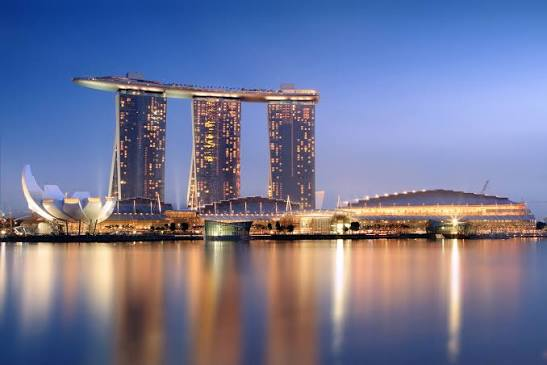

Descubre algunos de los lugares más interesantes para visitar.
París es conocida como la ciudad del amor y destaca por su arquitectura, sus museos y su gastronomía.
Más información sobre FranciaTokio combina la tecnología moderna con las tradiciones y la cultura japonesa.
Más información sobre Japón
Singapur es conocida por su gran arquitectura y sus estructuras de viviendas comunales.
Más información sobre Singapur en su oficina consular en MadridRecuerda consultar el clima y preparar toda la documentación necesaria.
Añade un tercer destino utilizando la misma estructura.